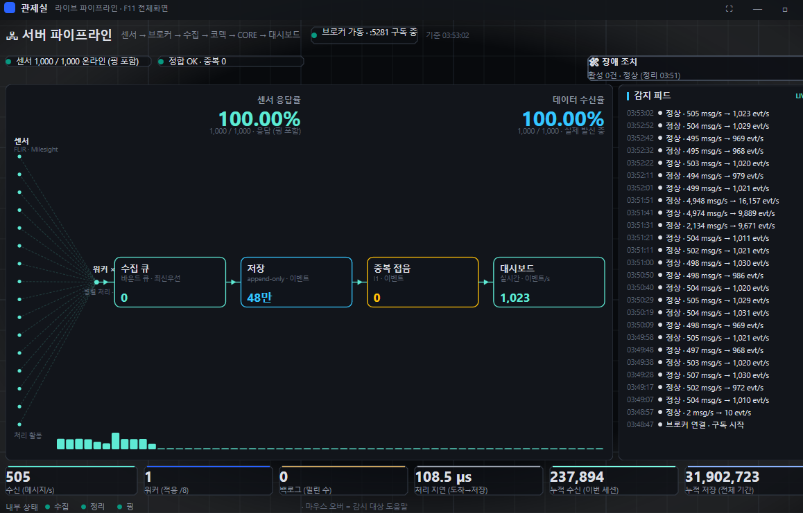
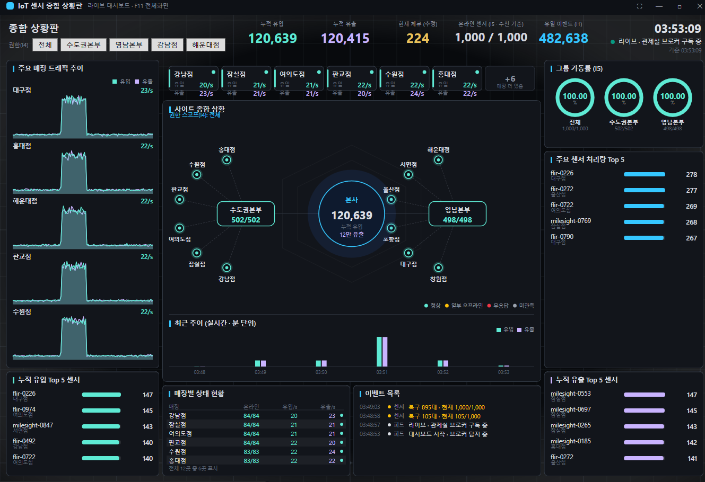
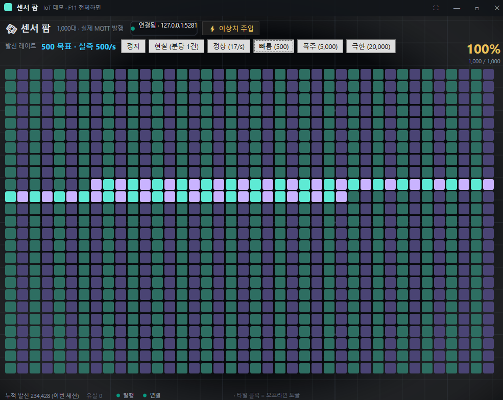

IoTSensorDashboard
단독 개발 40/40 소스 공개전국 매장 20곳의 출입구에 드나드는 사람을 세는 센서 1,000대가 붙어 있다고 가정한 시스템입니다. 들어온 수와 나간 수를 따로 받아 지금 매장 안에 몇 명이 있는지를 냅니다. 센서가 보내는 순간부터 관제 화면에 뜨기까지 다섯 단계 전부를 하나의 프로그램 묶음으로 만들었습니다.
무엇을 만들었나
센서 1,000대 매장 20곳 출입구 · 들어옴(in)과 나감(out)을 따로 보고한다 │ ▼ MQTT 브로커 메시지를 받아 나눠주는 우체국. 외부 서버 없이 앱 안에 넣었다 │ ▼ 수집 같은 사건이 두 번 오면 한 건으로 접고, 시각·값이 이상하면 격리한다 │ ▼ 저장 SQLite · 묶어서 쓰기 · 오래된 건 요약본으로 접고 지운다 │ ▼ 판정 조용해진 센서 · 불가능한 값 · 권한 · 알림을 어디까지 올릴지 │ ├─ 대시보드 매장별 상태와 추이를 한 화면에 (패널 10장) ├─ 관제실 지금 이 순간 파이프라인이 어디까지 소화하는지 └─ 센서팜 센서 1,000대 개별 상태 + 부하를 직접 만들어 던지는 발생기
- 센서가 말을 멈추면 알아챕니다. 값이 안 오는 것과 값이 이상한 것은 다른 사고라서 따로 판정합니다. 센서마다 발신 주기가 달라 주기를 관측해 기준을 스스로 맞춥니다 — 고정 기준을 두면 느린 센서가 매번 고장으로 잡힙니다.
- 있을 수 없는 값은 격리합니다. 문 하나로 1초에 수천 명이 들어올 수는 없습니다. 그런 값은 버리는 게 아니라 따로 세어 둡니다 — 지운 것과 걸러낸 것은 다르게 취급해야 나중에 원인을 찾습니다.
- 알림을 단계로 올립니다. 한 번 튄 값과 10분째 응답 없는 센서를 같은 무게로 알리면 아무도 안 봅니다. 담당자 → 관리자 → 비상으로 올라가고, 복구되면 내려옵니다.
- 오래된 데이터는 스스로 접습니다. 원본을 영원히 두면 디스크가 먼저 죽습니다. 시간이 지나면 분·시간 단위 요약으로 접고, 더 지나면 지우고, 빈 공간을 회수합니다.
- 부하를 직접 만들어 던질 수 있게 했습니다. 발신 속도를 현실(분당 1건) · 정상(17/s) · 빠름(500/s) · 폭주(5,000/s) · 극한(20,000/s) 로 눌러서 바꾸고, 이상치도 주입합니다. 아래 발견들은 전부 이 발생기로 재현한 것입니다.



그래서 무엇을 발견했나
돌아가는 것까지는 어렵지 않았습니다. 부하를 올리자 전부 여기서 갈렸습니다.
- 01수신은 되는데 저장이 0 — 그런데 아무 흔적도 없었습니다 센서는 보내고 있고 화면의 수신 건수도 오르는데, 저장만 되지 않았습니다. 대기열도 0, 폐기도 0이라 어디로 샜는지 단서가 없었습니다. 원인은 버려진 게 아니라 접힌 것이었습니다 — 처리 주기가 밀리면 한 주기에 같은 센서를 두 번 세게 되고, 그러면 같은 센서·같은 밀리초가 만들어져 중복 방지 규칙이 전부 하나로 합쳐버립니다. 유실을 막으려고 넣은 장치가 유실을 만들고 있었습니다. 한 주기에 명부를 한 바퀴까지만 돌도록 상한을 걸어 중복 22,426건 → 0건, 저장량 +25%.
- 02추측으로 두 번 헛짚고, 진단을 먼저 만들어 5초 만에 찾았습니다 위 문제를 고친 방법입니다. 화면의 정합성 표시가 "중복으로 접은 건수"를 보고 있지 않아서, 시스템이 스스로 "유실 0 · 정상"이라고 말하고 있었습니다. 코드를 고치는 대신 그 숫자를 화면에 올리자 원인이 즉시 드러났습니다. 재현 조건이 까다로워 세 번 만에 잡았는데, 앞의 두 번이 실패한 이유는 같았습니다 — 화면 없이 검증했습니다. 거기엔 UI가 없으니 "화면이 멈춘다"가 재현될 리 없었습니다.
- 03한 번은 무해한 호출이, 초당 수천 번이면 흉기입니다 화면이 매 프레임 "이 센서 살아있나?"를 물었고, 그 호출이 잠금을 잡았는데 같은 잠금을 수집 쪽이 쓰고 있었습니다. 화면 한 장이 프레임당 잠금을 1,000번 잡아 수집을 굶겼습니다. 900만 행짜리 전체 집계를 매 주기 두 곳에서 부르던 것도 같은 부류였습니다. 한 번에 복사해 오는 방식으로 잠금 1회로 줄였습니다. 함수 하나만 보면 멀쩡한데 호출 빈도를 보면 아니었던 경우이고, 이 프로젝트에서만 세 번 나와 규칙으로 승격했습니다.
- 04계산이 전부 맞아도 화면은 거짓말을 합니다 기준이 다른 수를 나란히 놓은 것만으로 세 곳이 틀렸습니다. 상단에 저장 176만 건과 수신 1,720건을 붙여놨는데 하나는 DB 전체 누적이고 하나는 이번 실행분이라 1,000배가 났습니다. 가동률이 화면마다 865/1,000과 1,000/1,000으로 갈린 것은 한쪽만 응답 확인까지 셌기 때문이고, 3,722 → 1,862로 반이 증발한 것은 하나가 사건 수, 하나가 메시지 수였기 때문입니다. 해법은 설명을 덧붙이는 게 아니라 라벨에 기준을 적고, 단위가 안 맞는 자리는 숫자를 비우는 것이었습니다.
C# / .NET 8WPF · 직접 렌더링MQTT (브로커 내장 · TLS)SQLite · WAL · 롤업백그라운드 워커xUnit 377건PowerShell 검증 도구